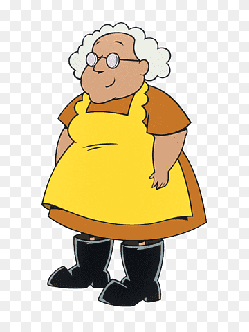

Coragem, O Cão Covade é um desenho da emissora Cartoon Network, seu criador é John R. Dilworth e seu autor David Cohen, seu idioma original é o Inglês.
Coragem é um cachorro que vive em uma fazenda distante onde acontecem aparições de monstros, fantasmas e outras criaturas. O animal está sempre defendendo e salvando seus donos idosos de eventos misteriosos.
Muriel é a senhora gentil dona de Coragem e a esposa trabalhadora de Eustácio Bagge. Muriel é a donzela-em-aflição do programa. Ela é aparentemente uma cozinheira muito boa e sempre usa seu rolo para bater em Eustácio sempre que ele assusta, provoca, abusa ou maltrata Coragem.
